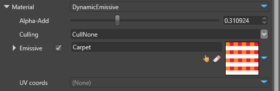
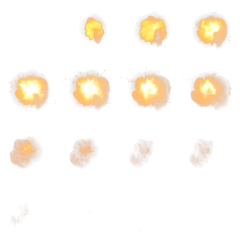
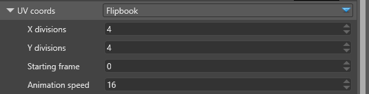
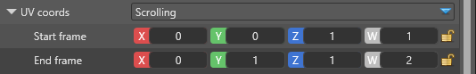

パーティクル マテリアル
初級 アーティスト プログラマー
マテリアル（material） は、シェイプのレンダリング方法について定義します。色、テクスチャー、その他のパラメータを定義します。
パーティクル マテリアル（particle material） は、メッシュに使われるマテリアルの簡易版です。今のところ、Emissive Map マテリアルの 1 種類のみです。
エミッシブマップ（Emissive Map）
このマテリアルでは、ピクセルシェーディングに半透明のエミッシブ色 RGBA を使用しています。HDR レンダリングモードでは、値は強度として使用され、1 よりも大きい値を取ることができます。

| プロパティ | 説明 |
|---|---|
| Alpha-Add | 半透明レンダリングは、アルファブレンディング、加算ブレンディング、その中間のいずれかがサポートされています。このパラメータでは、パーティクルのアルファブレンディング（ 0 ）または加算（ 1 ）の度合いをコントロールできます。 |
| Culling | カリングなし（CullNone）、フロントフェイスカリング（CullFront）、バックフェイスカリング（CullBack）のいずれかを指定します。カメラ向きパーティクルは、常にカメラに正面を向けています。 |
| Emissive | パーティクルの発光色（RGBA カラー）です。完全な説明については、マテリアルマップを参照してください。 |
| UV coords | テクスチャーサンプリングを使用するパーティクルでは、uv 座標のアニメーションを指定することができます。今のところ、以降で説明する 2 種類があります。 |
UV 座標 > フリップブック（UV Coords > Flipbook）
フリップブック（flipbook）アニメーションは、テクスチャーをフレームの連続とみなし、フリップブックのように 1 フレームずつ表示します。
次の画像は、爆発をイメージした4×4フリップブックアニメーション用のテクスチャーの例です。

フリップブックアニメーションには、以下のようなプロパティがあります。

| Property | Description |
|---|---|
| X divisions | テクスチャー分割の列の数 |
| Y divisions | テクスチャー分割の行の数 |
| Starting frame | アニメーションを開始するフレームを指定します。左上のフレームは 0 で、左から右に 1 ずつ増えていき、それから下に移動します。 |
| Animation speed | パーティクルの生存期間中に表示するフレームの総数です。この値が X x Y である場合、アニメーションはパーティクルの生存期間中にすべてのフレームを表示します。この速度は相対的なもので、生存期間の長いパーティクルほどアニメーションが遅くなります。 |
UV 座標 > スクロール（UV Coords — Scrolling）
スクロールアニメーションでは、ビルボードまたはクワッド上でのスクロール開始矩形を定義し、その矩形がテクスチャーを横切って終了位置まで移動します。これにより、クワッドのサーフェス上でテクスチャーがスクロールまたはスケーリングする効果が得られます。
テクスチャーの座標は、0 以下でも 1 以上でも構いません。 テクスチャをサンプリングする方法は、マテリアルマップで定義されているアドレッシングモードに依存します。詳しくは、MSDNドキュメントをご覧ください。
スクロールアニメーションのプロパティは以下の通りです。

| プロパティ | 説明 |
|---|---|
| Start frame | パーティクルが放出されるときの初期テクスチャーサンプリング矩形 |
| End frame | パーティクルが消滅する時の最終テクスチャーサンプリング矩形 |